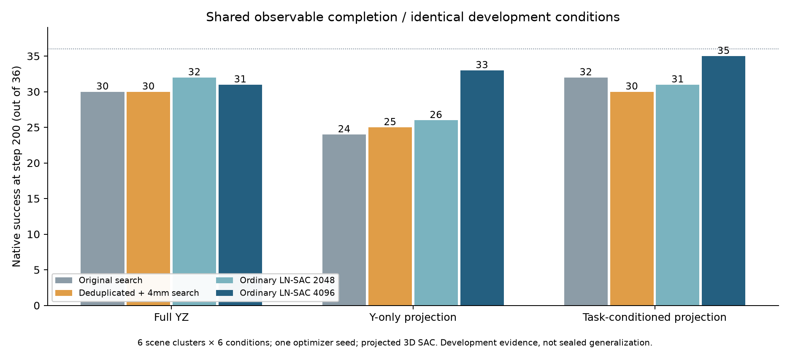
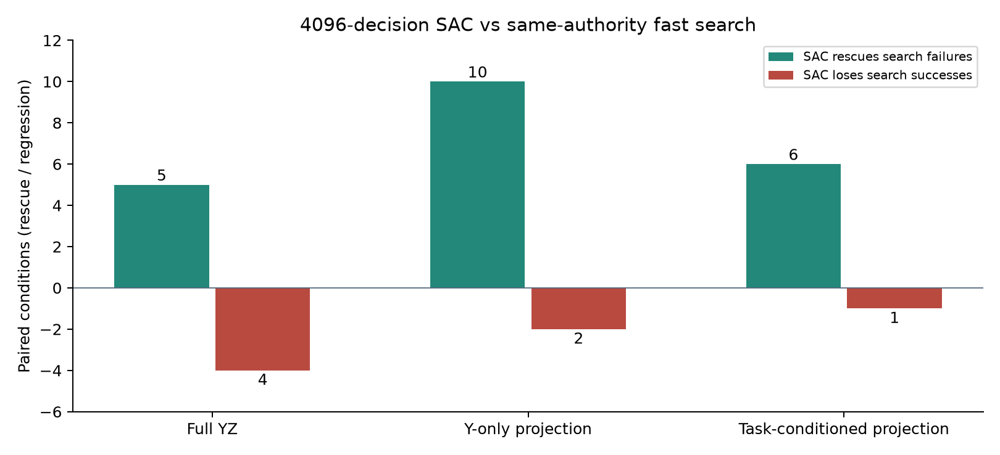
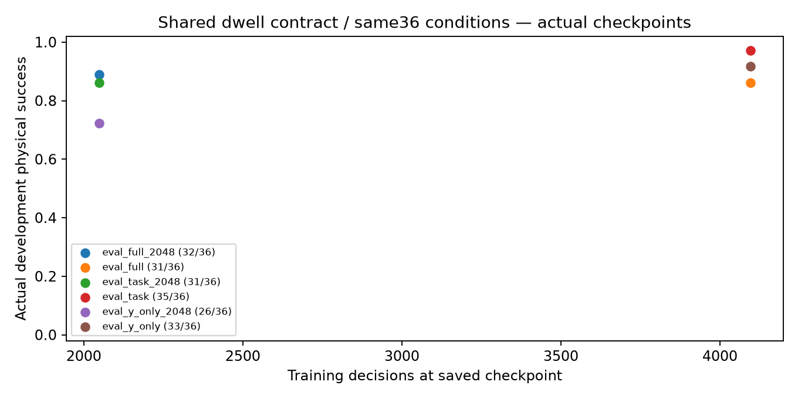
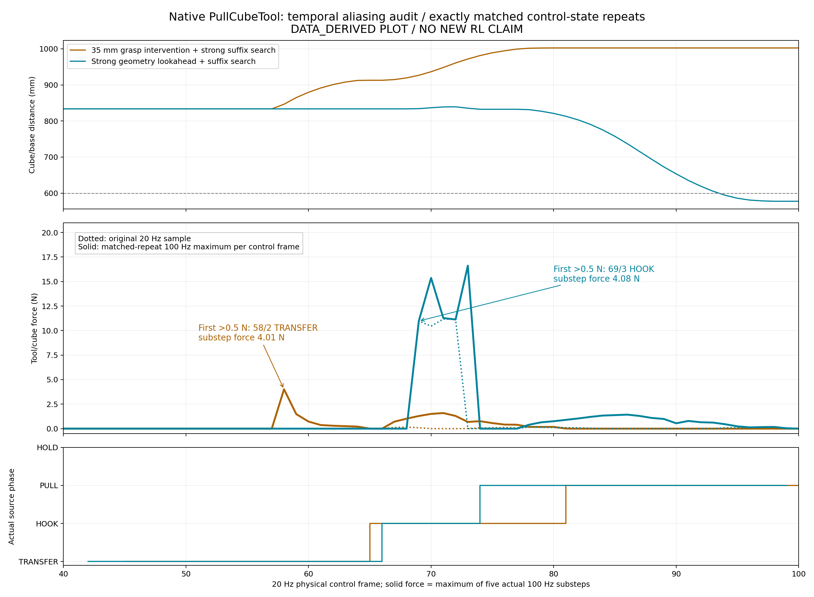
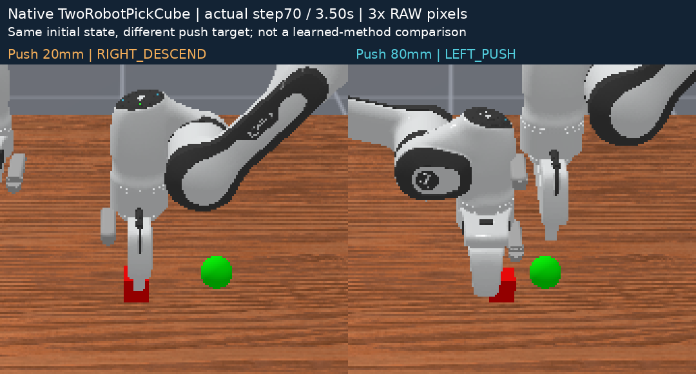

本轮能说明什么 / Claim boundary
真实物理指仿真器中实际执行 action 并推进动力学；不是机器人实机实验。视频为这些已执行状态的 MEASURED_POSE_REPLAY：按保存关节与物体状态渲染，不重新执行动作、不生成额外物理试验。
当前页面不宣称原创 RL 增益。A 是学习/控制组件；B 的两边界轨迹是物理参数干预与确定性控制器修复。成功案例或训练结果不等于超越公平强基线，亦不等于跨种子泛化。
Physics means actual simulated dynamics. Rendered playback preserves recorded states. Full curves and terminal scores are offline reviewer information, not policy inputs or current-frame success. SkillResult cards appear only after their actual boundaries.
A · 已完成评估 / Completed evaluations
每行直接读取 EVAL_SCORES.json。ALL 与子条件相互重叠，禁止相加；多个条件共享 scene seed，并非独立训练种子。episodes、distinct_scene_seeds 和训练种子是不同统计单位。本页面不计算置信区间或汇总“方法胜率”。
完整评估行 / EVAL_SCORES.json · A 实验说明
本轮最强确定性对照仍为原任务权限搜索32/36。任务权限SAC35/36相对它救回4、退化1；6场景聚类bootstrap开发差值区间为[-5.56,+22.22]个百分点。下方快搜索配对图是另一项对照，不能替换最强基线来夸大增益。单训练种子，尚无原创方法或稳定泛化结论。
同条件核心结果 / shared conditions

同权限救回与退化 / paired tradeoff

实际checkpoint评估 / actual physical evaluation

claim
COMPONENT_BASELINE_NOT_MULTISKILL_METHOD
native_success_contract
position<=.005m and angle<=.2rad at physical step200
observable_completion_contract
current source:4mm/.12rad enter,4.6mm/.16rad exit,20Hz pose-delta velocity<=.02m/s and .3rad/s,3 unique-step dwell; historical smoke source versions retained
oracle_boundary
Native success is allowed as terminal training reward and evaluation label; actor input/online stop use observed geometry, frame velocity and declared family, not true bias or native success.
expected_runs
{"train_full": "FINAL", "train_y_only": "FINAL", "train_task": "FINAL", "eval_full": "FINAL", "eval_y_only": "FINAL", "eval_task": "FINAL"}finalized_cost_including_failed_smokes
{"complete_episodes": 1258, "physics_steps": 251600, "policy_decisions": 21995, "optimizer_updates": 11520, "tail_hold_steps": 359, "tail_episodes": 4}unfinished_recorded_physics_lower_bound
0
controls_expected
full geometry/search; all-authority original and fast deduplicated search; full RLS and legacy controls on two-scene diagnostic panel; absence is not zero cost
warnings
[]
Missing / unfinished runs are not failures with zero success and are not zero cost. Cost fields retain the producer’s definitions and may update on regeneration.
B · 两个真实执行边界 / Two executed skill boundaries
PullCubeTool · pick → use tool
PHYSICAL_PARAMETER_INTERVENTION_NOT_LEARNED_METHOD
实验边界与失败说明 · 原始汇总
StackPyramid · support → top placement
NATIVE_PARAMETER_SCOUT_NOT_RL_GAIN
实验边界与失败说明 · 原始汇总
策略行的初态和样本数可能不同，不能直接将下表视为等预算排行榜。Pull 参数枚举不代表学得的新策略；Pyramid 某个侧向抓持修复成功不代表所有方向可行。两边界计数继承各报告定义，真实验证结果见视频时间线和原始记录。
PullCubeTool · 原始逐策略计数 / no pooling
Pyramid · 原始逐策略计数 / no pooling
强后段规划与物理归因 / Strong successor controls
TwoRobot 完整后段几何控制：4 个新初态 × 2 个前段终点，8/8；相同前段状态的正交抓持干预为 2/4。下方双臂视频展示较早的控制器诊断，不能当作这个更强版本的对比视频。
本轮 B 共77条实际原生任务执行、9200控制步、14个不同初态种子，零 RL 更新；混合用途的成功数不汇总成胜率。Pull 同路径降速降低冲击但没有修复差抓持漂移，较好抓持反因额外22步耗尽预算。
B 科学结论与成本完整后段强基线100Hz 同路径降速实验完成合同边界与下一项反证
完整物理轨迹回放 / Full trajectory review
使用同步入口查看阶段、参数决策及实际结果；以下视频包含全原生时限，不是局部成功剪辑。
PullCubeTool：35mm干预 vs 强几何控制
打开可点击同步时序 / SYNC全程原版 RAW英文高亮 ANNOTATED结论与限制QA来源 SHA
{"frames": 101, "fps": 20, "physics_steps_added_by_rendering": 0, "source_kind": "MEASURED_POSE_REPLAY", "browser_QA": {"duration": 5.05, "floor50": true, "click50": true, "four_decisions": true, "second_decision_seek_time": 2.049999, "second_decision_expected_time": 2.05, "second_decision_seek": true, "raw_switch": true, "no_future_result": true, "note": "No physics; browser interface only"}}
近景 / 接触时序证据

原20Hz接触与独立匹配重复实验的100Hz帧内峰值分开呈现。后者不是原视频实验直接采得的子步数据；100个控制步动作/状态一致性审计和两个源SHA均保留。
Pyramid：固定侧向夹爪 vs 方向感知控制器修复
打开可点击同步时序 / SYNC全程原版 RAW英文高亮 ANNOTATED结论与限制QA来源 SHA
{"frames": 251, "fps": 20, "physics_steps_added_by_rendering": 0, "source_kind": "MEASURED_POSE_REPLAY", "browser_QA": {"duration": 12.55, "floor100": true, "click125": true, "source_decision_count": true, "last_decision_seek": true, "raw_switch": true, "no_future_result": true}}
近景 / 接触时序证据

TwoRobot：20mm vs80mm交接参数 / 原生100步
打开可点击同步时序 / SYNC全程原版 RAW英文高亮 ANNOTATED结论与限制QA来源 SHA
{"frames": 101, "fps": 20, "physics_steps_added_by_rendering": 0, "source_kind": "MEASURED_POSE_REPLAY", "browser_QA": {"duration": 5.05, "floor50": true, "click50": true, "source_decision_count": true, "last_decision_seek": true, "raw_switch": true, "no_future_result": true}}
近景 / 接触时序证据
